Historia
El viaje a través de los siglos
Desde las tablillas micénicas hasta la diáspora en América del Sur, la historia del trípode y su apellido atraviesa tres milenios.
🏺
c. 1450–1200 a.C.
Micenas: primera mención escrita
La palabra ti-ri-po-de (trípode) aparece en las tablillas de arcilla en Lineal B. Los trípodes ya son objetos de valor: premios, ofrendas y activos de palacio. El apellido aún no existe, pero su raíz está documentada 3.500 años atrás.
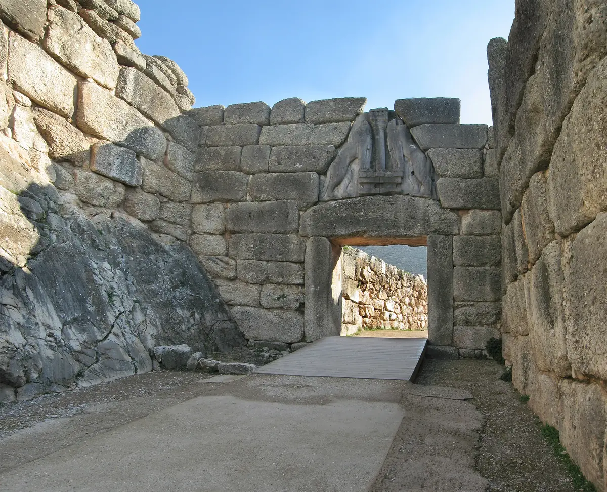
Puerta de los Leones de Micenas — La entrada monumental de la ciudadela de Micenas (c. 1250 a.C.), construida con grandes bloques de piedra y coronada por el relieve de dos leones enfrentados.','https://es.wikipedia.org/wiki/Micenas#/media/Archivo:Lions-Gate-Mycenae.jpg')"> Tablilla micénica NAMA 7671 en Lineal B — Tablilla de contabilidad del palacio de Micenas. El silabograma ti-ri-po-de es la primera evidencia escrita de la raíz del apellido Tripodi.','https://es.wikipedia.org/wiki/Micenas#/media/Archivo:Linear_B_(Mycenaean_Greek)_NAMA_Tablette_7671.jpg')">Tablilla micénica con escritura Lineal B · toca para ampliar · Micenas – Wikipedia
📜
c. 800–700 a.C.
Hesíodo gana un trípode "de orejas"
El poeta Hesíodo compite en los juegos fúnebres de Anfidamante, rey de Calcis. Su victoria con un himno le vale un trípode orecchiuto (de orejas/asas), que dedica a las Musas del Helicón. Este episodio, narrado en Las obras y los días (vv. 650–662), es uno de los primeros testimonios literarios del trípode como premio.

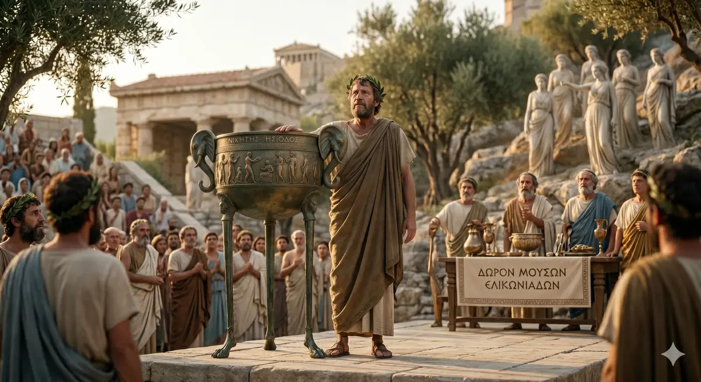
Hesíodo gana el trípode — Representación de Hesíodo recibiendo su trípode orecchiuto (de orejas/asas) como premio poético, c. 700 a.C.')">Portada e ilustración de Hesíodo · toca para ampliar
⚡
c. 800–400 a.C.
La Pitia y el trípode sagrado de Delfos
El Oráculo de Delfos alcanza su auge. La Pitia profetiza sentada sobre un trípode dorado, inhalando vapores de etileno. El trípode se vuelve el símbolo de Apolo. El mitema de Hércules robando el trípode a Apolo aparece en cerámicas del siglo VI a.C.
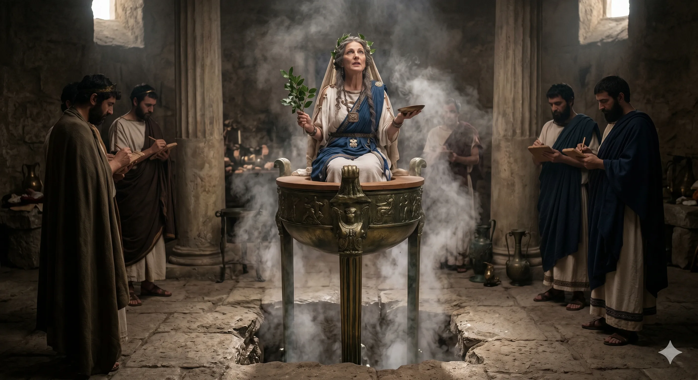
La Pitia sobre el trípode — La sacerdotisa de Apolo en el templo de Delfos, inhalando los vapores de etileno de la fisura geológica bajo sus pies.')"> Hidria con escena délfica del trípode — Cerámica ática de figuras negras que muestra a Heracles y Apolo disputando el trípode sagrado.','https://es.wikipedia.org/wiki/Tr%C3%ADpode_%28mueble%29#/media/Archivo:Hydria_Delphic_tripod_MNA_Inv10913.jpg')">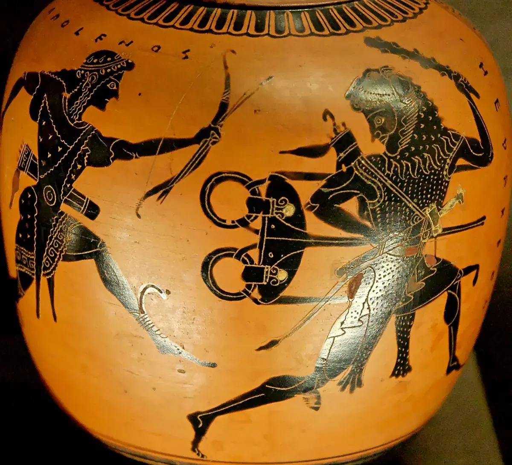
Disputa de Heracles y Apolo por el trípode délfico — Oinochoe ático de figuras negras, c. 520 a.C. Museo del Louvre, París.','https://es.wikipedia.org/wiki/Archivo:Herakles_tripod_Louvre_F341.jpg')">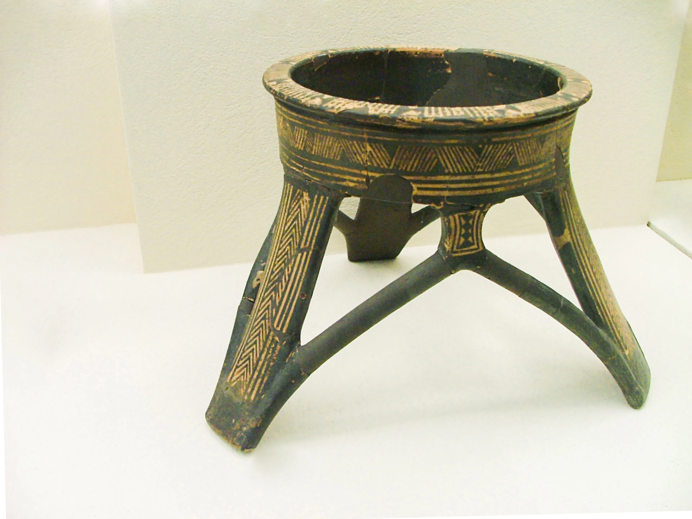
Trípode griego del período geométrico, c. 950–900 a.C. Museo Arqueológico del Cerámico, Atenas.','https://es.wikipedia.org/wiki/Tr%C3%ADpode_%28mueble%29#/media/Archivo:Ancient_Greek_tripod_-_KAMA.jpg')">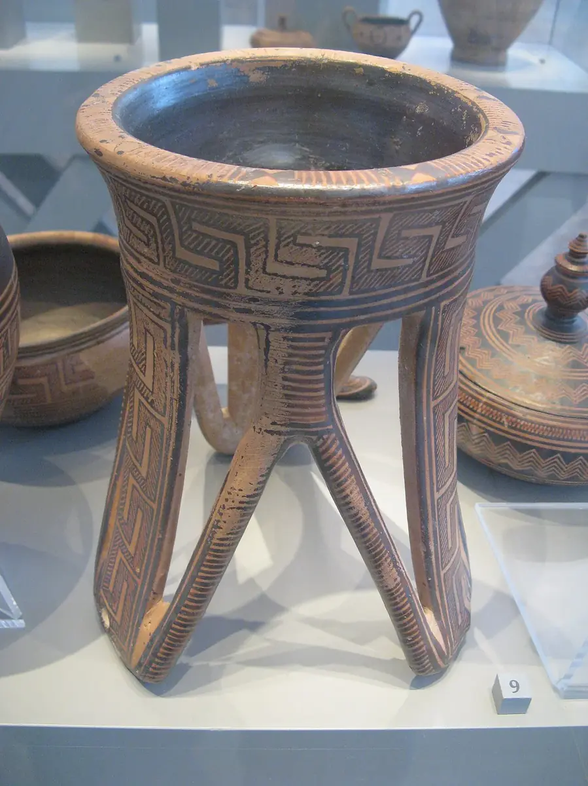
Trípode de cerámica protoática, c. 850 a.C. Antikensammlung, Berlín.','https://es.wikipedia.org/wiki/Tr%C3%ADpode_%28mueble%29#/media/Archivo:Attic_geometric_tripod_Antikensammlung_Berlin_2.jpg')">Trípodes griegos y escenas délficas · toca para ampliar · Trípode – Wikipedia
⚔️
479 a.C.
El Trípode de Platea: victoria sobre Persia
Las ciudades griegas funden un trípode de oro con el botín persa. Se sostiene sobre la Columna Serpentina de bronce con los nombres inscritos de las 31 polis combatientes. Constantino lo trasladó a Constantinopla, donde hoy permanece en el Hipódromo de Estambul.
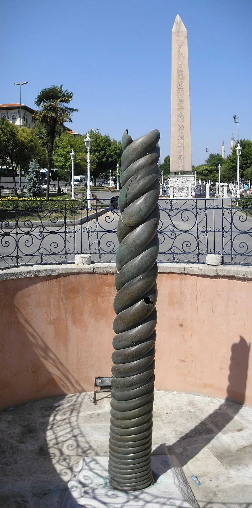
La Columna de las Serpientes — El fuste de bronce del Trípode de Platea en el antiguo Hipódromo de Constantinopla, hoy Estambul. Trasladado en el 324 d.C.','https://es.wikipedia.org/wiki/Columna_de_las_Serpientes#/media/Archivo:Snake_column_Hippodrome_Constantinople_2007.jpg')">

Columna Serpentina · toca para ampliar · Trípode de Platea
🎭
335 a.C.
El Monumento de Lisícrates y la "Calle de los Trípodes"
Lisícrates, corego ateniense victorioso, erige un monumento para exhibir su trípode-premio. La odos ton tripodon (Calle de los Trípodes) de Atenas se llena de estos monumentos. El de Lisícrates sobrevive hasta hoy.


Monumento de Lisícrates y la Calle de los Trípodes · toca para ampliar
⛵
c. 750–500 a.C.
La Magna Grecia: los colonos llevan el nombre a Italia
Colonos griegos fundan ciudades en las costas de Calabria, Campania y Sicilia. Con ellos viajan la lengua y las deidades. El término tripodion comienza a usarse como apodo familiar en centros como Rhegion.
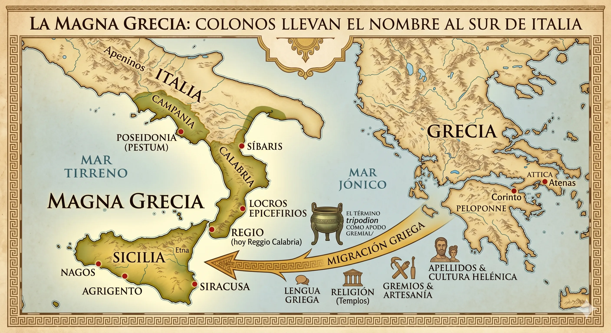
Migración griega al sur de Italia — Las oleadas colonizadoras que fundaron la Magna Grecia, origen del apellido Tripodi.')">Migración griega a Italia · toca para ampliar
🕌
535–1071 d.C.
Bizancio preserva el griego en Calabria
El Imperio Bizantino gobierna el sur de Italia. El griego vuelve a ser lengua oficial por 5 siglos. Monjes basilianos fundan monasterios. Esta herencia bizantina es clave para la continuidad del apellido Tripodi sin latinización completa.
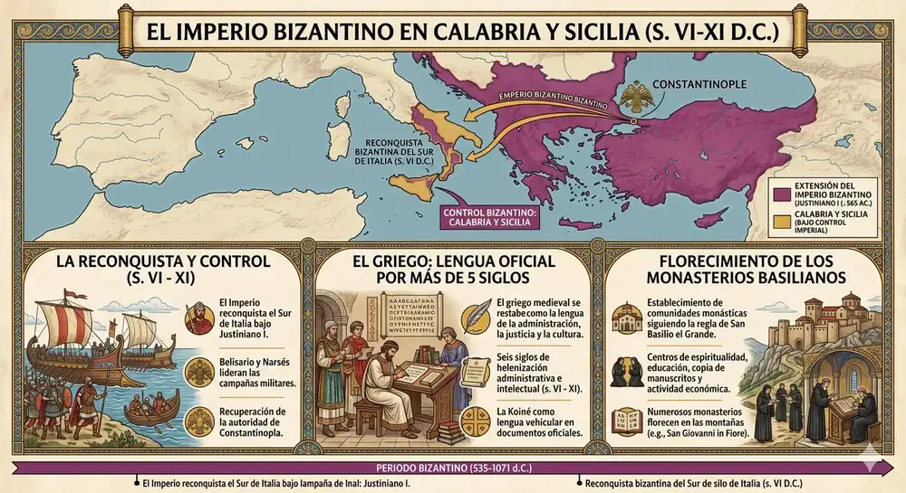
Reconquista de Calabria y Sicilia por el Imperio Bizantino (535–1071 d.C.) — Consolidó apellidos helénicos como Tripodi en Calabria.')">Imperio Bizantino en Calabria · toca para ampliar
📜
Siglo X — Sicilia
El casato siciliano: los Tripodi como familia notable
Documentos italianos registran a los Tripodi/Tripodo como un antico ed assai notabile casato siciliano en Messina. Desde el siglo XVII se propagan por el reino, aportando terratenientes, caballeros, doctores en leyes y sacerdotes.
🚢
1880–1940
La gran diáspora: Argentina y los EE.UU.
La emigración masiva del Mezzogiorno lleva a miles de portadores del apellido hacia Buenos Aires, Rosario, Nueva York y Nueva Jersey. En Argentina se convierte en uno de los apellidos de origen calabrés más característicos.
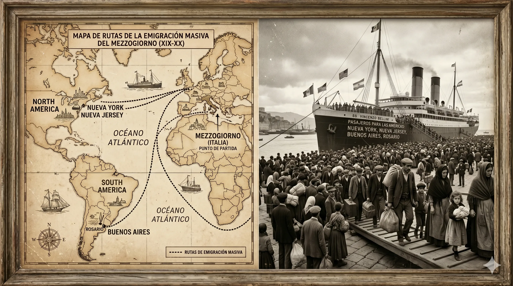
La gran diáspora italiana — Emigración masiva entre 1880 y 1940.','https://es.wikipedia.org/wiki/Emigraci%C3%B3n_italiana')">Mapa de la diáspora italiana · toca para ampliar · Emigración italiana – Wikipedia
🌍
Hoy
~17.000 Tripodis en el mundo
El apellido está presente en más de 20 países. Italia concentra la mayor cantidad, seguida de Argentina, Estados Unidos y Brasil.
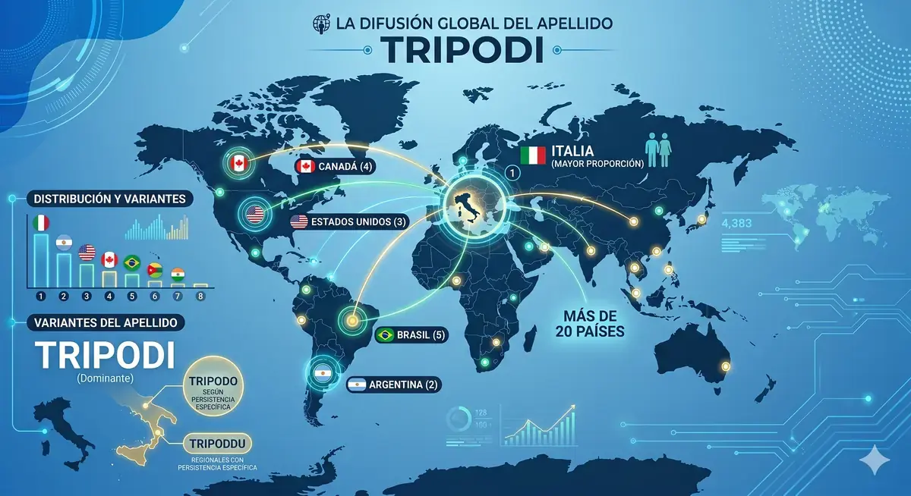
Los Tripodi en el mundo hoy — Distribución geográfica en el siglo XXI.')">Distribución global del apellido · toca para ampliar